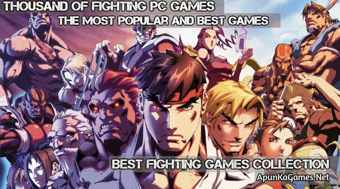

Fighting Games

From the arcade gallery to your TV at home, fighting games came out since the earliest days of video games and
are still coming forth with new versions to this day
The fighting games free download can be a little bit more difficult to play. We are not mentioning gunfights here,
they are an art themselves, like beat ’em ups. And one needs time to master some art. We have also written
separate articles on them. However, in this discussion, we get into a brawl, with punching fists, flying kicks, and
crushing bones.
Renaissance for PC Games
Traditionally, the fighting game genre has been popular on home video game consoles, which have left the PC
games far behind. However, the Windows PC platform has skyrocketed in the recent times. Still, the fighting
games are great PC games. Those who are crazy about martial arts action have lots of options here, including 1-
on-1 and team-based fighting games
That being said, you cannot find excellent, retro gems from anywhere. Yet, our website is loaded with an
astonishing variety of PC fighting games, to satisfy the fans of this genre.